All resources are available via the links above. If you are using a Safe Software training machine or downloaded FMEData, you can use the local paths.
After completing this lesson, you’ll be able to:
You have recently created an Automation in FME Flow that processes building footprint updates with both the Resource or Network Directory (updated) and Email Triggers. The Automation monitors a Shared Resource Data folder on FME Flow for new building footprint shapefiles, then adds the updates to a SpatiaLite database automatically. Now your supervisor is wondering if they can receive a notification whenever the corporate database is updated.
You know it is possible to configure the existing Automation in FME Flow to satisfy this requirement. You also realize that you can use an Automations writer in the workspace to include additional information about the updates made to the corporate database in the notification.
Open the starting workspace template (C:\FMEData\Workspaces\AutomateWorkflows\exercise-use-the-automations-writer.fmwt)in FME Workbench.
You will update this workspace to generate a summary of the number of records that were updated from the incoming Shapefile. First, you need to create a single feature from the updates. This step is common in FME when you want to log a summary message; you just want to log one per update, not one for every feature in that update.
Add an Aggregator transformer and connect it in parallel to the Shapefile reader feature type like this:
Double-click the Aggregator to open its parameters. The only changes from defaults you need to do are 1) set the Accumulation Mode to “Use Attributes From One Feature” and 2) change the Number of Aggregated Features to be named NumberOfUpdates.

Go to Writers > Add Writer and select the FME Flow Automations format. Set the Feature Type Definition to Automatic... and click OK to add the writer to the canvas.
When prompted, set the Feature Type Name to JobSummary and click OK.
Connect the Automations writer feature type to the output port of the Aggregator transformer.
Each Automation writer feature type will appear as a new output port on your Run a Workspace Action in your Automation.
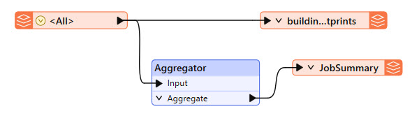
After connecting the Automations writer feature type, you'll notice that all the attributes from the Shapefile data are included on the writer. We don't need all that information within the Automation. Double-click JobSummary to open its parameter dialog, then go to User Attributes and select Manual under Attribute Definition.
Remove all the attributes except for the one we created earlier, NumberOfUpdates. Set the Type for NumberOfUpdates to int, as this is a numeric value.
Click OK to apply that change. At this stage, there should be two attributes on the JobSummary Feature Type: NumberOfUpdates and fme_feature_type.
Save the workspace.
Select File > Publish it to FME Flow.
Choose your FME Flow Connection to use. Click Next.
Use the Training Repository (click New... and create it if it doesn't exist). Check Upload data files. Click Next.
Ensure only the Job Submitter service is checked. Click Publish.
Next, you will create an Automation that will check for building updates using the workspace you just published.
Navigate to the FME Flow web interface and click on Automations > Create Automation.
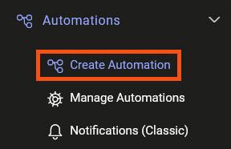
A trigger is automatically added to the canvas by default. Click the green lightning icon to open Trigger Details.
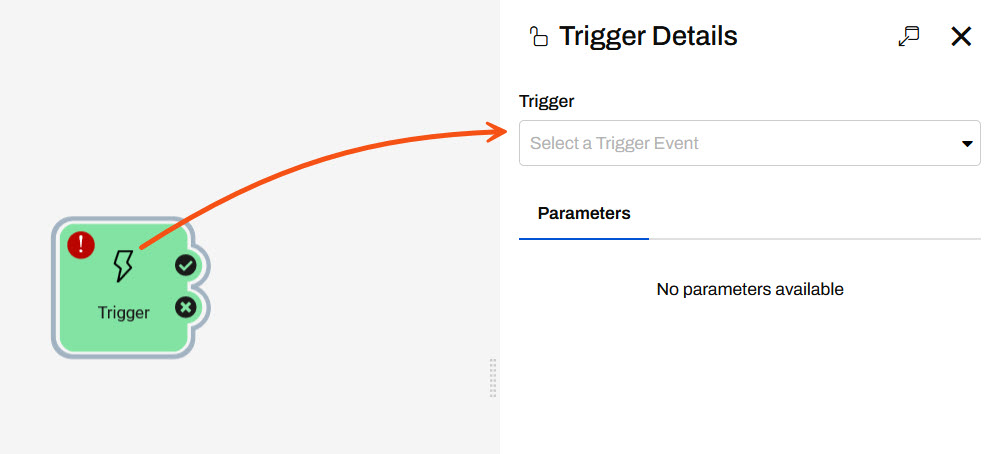
Set a Resource or Network Directory (updated) trigger and set the following parameters:
Directory to Watch: "$(FME_SHAREDRESOURCE_DATA)/BuildingUpdates/"
Events to Watch for: Create
Poll Interval: 30 seconds
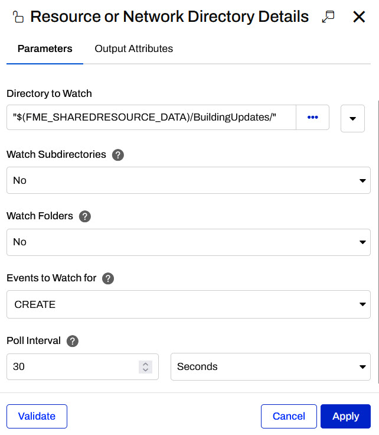
Click Validate to ensure your settings will work and then navigate to the Output Attributes tab to inspect the attributes available to be used from this trigger. When the workspace runs, you will want to pass the file from the Resource directory to the workspace to read.
Expand Success and Event Attributes. You should see a file.path attribute that we will be use when configuring the workspace parameters. Make sure it is selected.
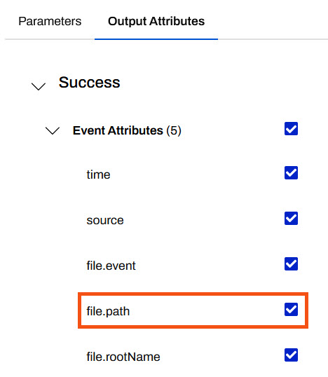
Click Apply to save your changes and close the trigger details.
Next, you need to use a filter action to the canvas so the directory watch only triggers the worskapce to run when certain files are added. Our workspace only accepts shapefiles so we don't want the workspace to run with an invalid file type.
Add an Internal Action to the canvas and connect it to the success port of the trigger.
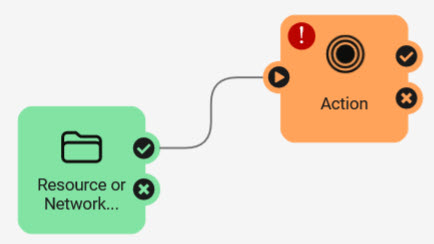
Click on the Action icon to edit the details and configure it to filter on the File Path attribute for .shp files.
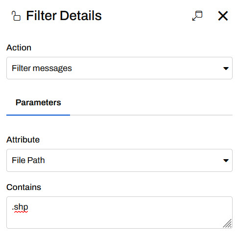
Click Apply to close the Filter Details.
Add another Internal Action to the canvas and connect it to the Filter success port.
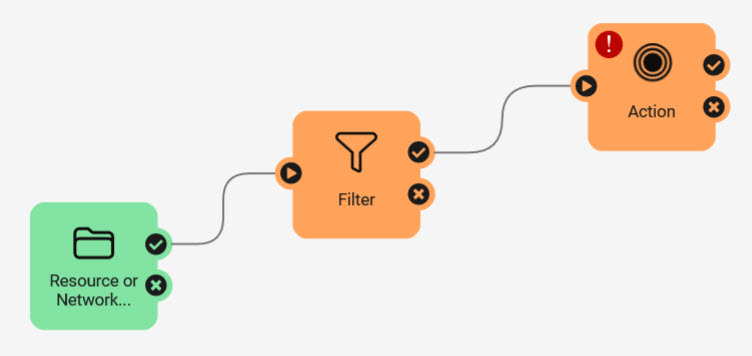
Configure this action to Run a Workspace. Select the exercise-use-the-automations-writer.fmw you published to FME Flow in step 5.
Set the Source Esri Shapefile(s) parameter to the File Path attribute from the Directory Watch Trigger.
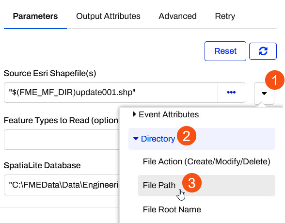
Set the SpatialLite Database path to $(FME_SHAREDRESOURCE_DATA)/Output/building_footprints.sl3 and click Apply.
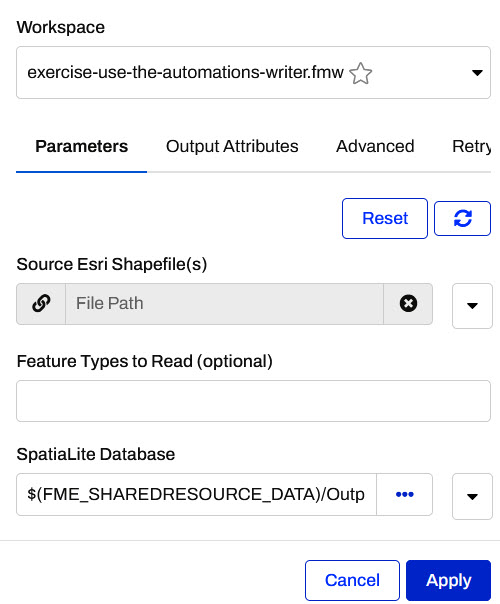
A new output port named JobSummary should appear in the Automation, created by the Automation Writer in the workspace.
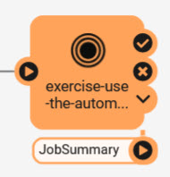
The final step in the Automation is to add a Log a Message Action through which a response will be sent.
Add another Action and connect it to the JobSummary output port of the Run Workspace node.
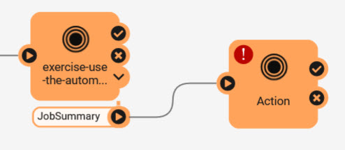
Click the icon on Action to open its parameters. Choose Log a message for the Action. Enter the following for the Formatted Message:
The Building Footprints database has been updated! {route.JobSummary.NumberOfUpdates} records were updated.
If you prefer, you can enter this manually using the Text Editor. You can access it by clicking the drop-down arrow next to Formatted Message and clicking Text Editor.
All Output Attributes from the previous actions in the automation are found on the left and can be formatted into the text.
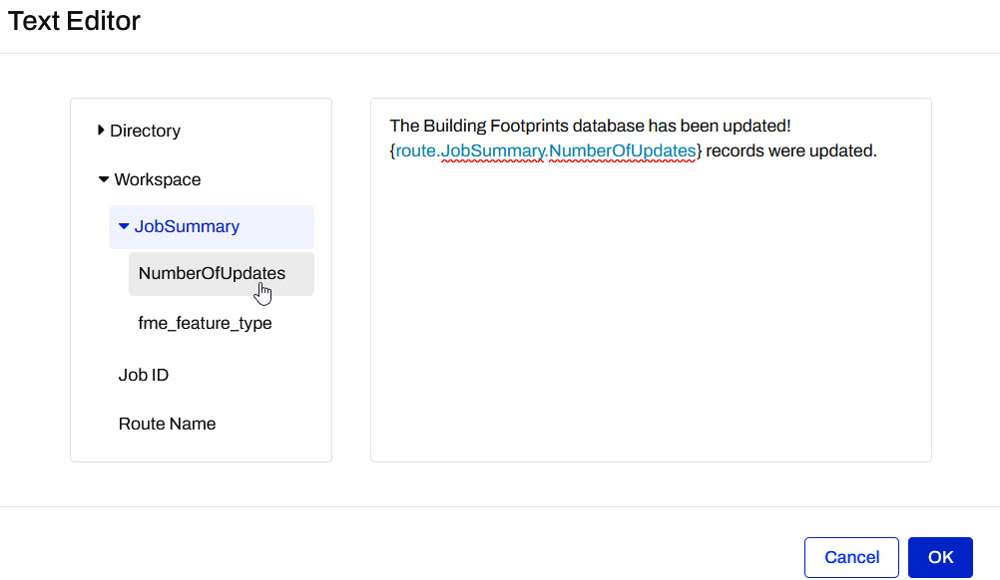
Click OK on the Text Editor and then click Apply to close the Log Details.
Save and start your Automation.
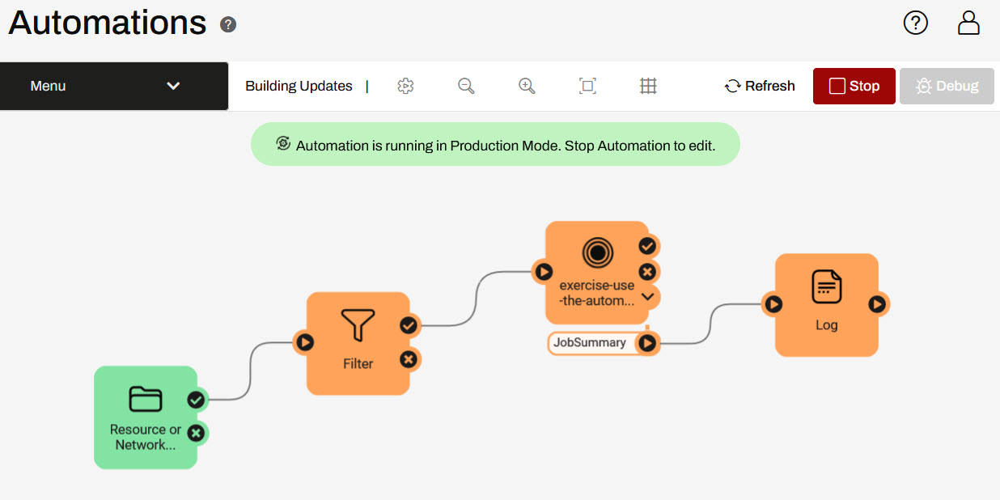
You can test this Automation by uploading this ZIP file (C:\FMEData\Data\Engineering\BuildingFootprints) of the Shapefile datasets to FME Flow's Shared Resources Data folder. The Automation trigger is monitoring this folder every 30 seconds; when new files arrive, it will run the workspace, updating the SpatiaLite database building_footprints.sl3. We should be able to see this process by examining the Automation log.
To upload the ZIP file, first, download it.
Then, extract it to a folder called BuildingUpdates.
Then navigate to Resources using the FME Flow web interface. Then click on Data.
Create (or open if it already exists) the BuildingUpdates folder. Click it to view its contents.
Next, click the Upload button and then click Files.
Select the four files corresponding to one of the updates (e.g., update002.dbf, update002.prj, update002.shp, and update002.shx) and click Upload, and then OK. The SHP update will be uploaded.
Click Automations > Manage Automations > Incoming Building Footprints. Click Menu > View Triggered Jobs. You should see a job for the new building update. If you upload another four files or upload multiple updates at once, you should see one job for each update.

If you examine the Automation log (Automations > Manage Automations > Incoming Building Footprints > Menu > View Log), you should see one line like this per job:
2022-08-27T10:57:04-07:00 | The Building Footprints database has been updated! 44 records were updated.
Congratulations! You have successfully used the Automations writer to pass messages out of a workspace.